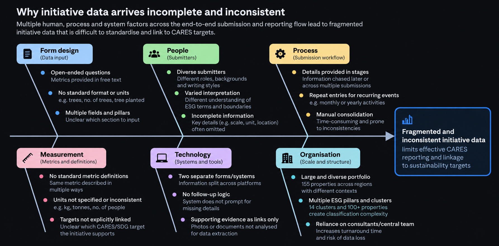
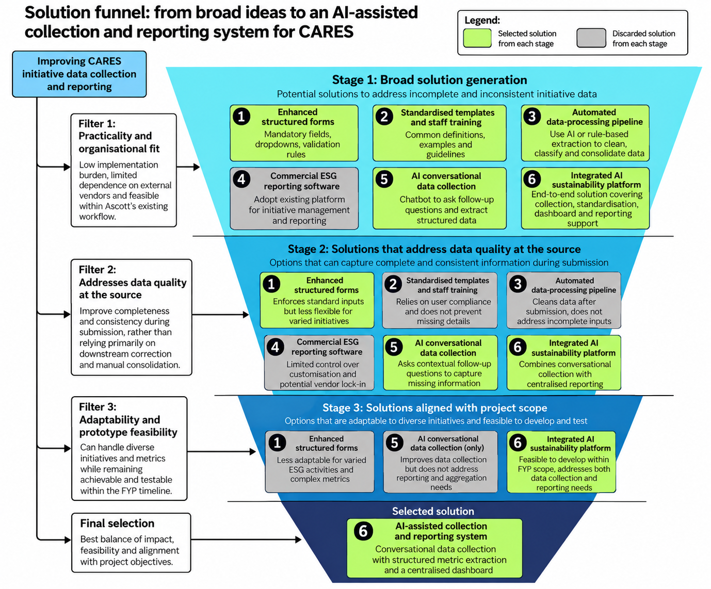
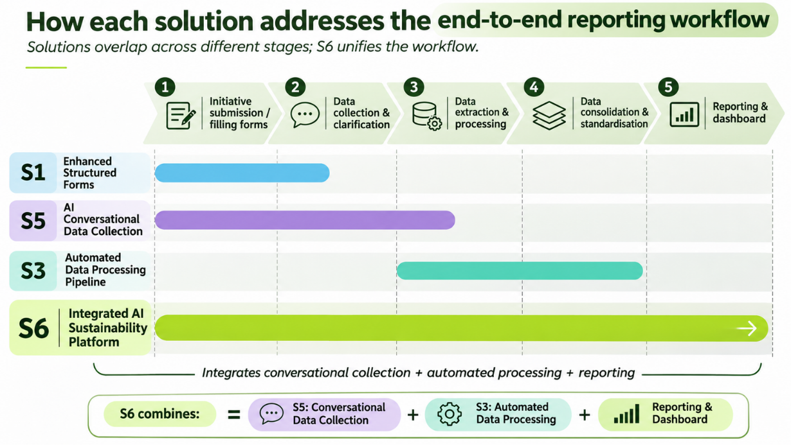
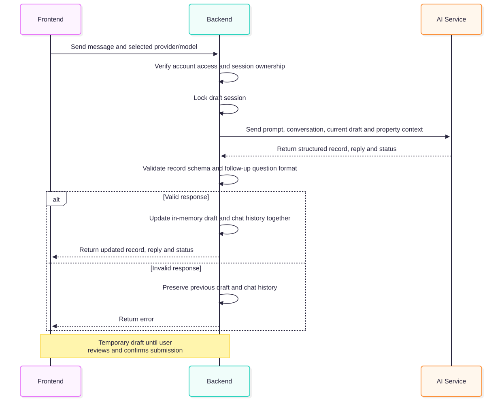
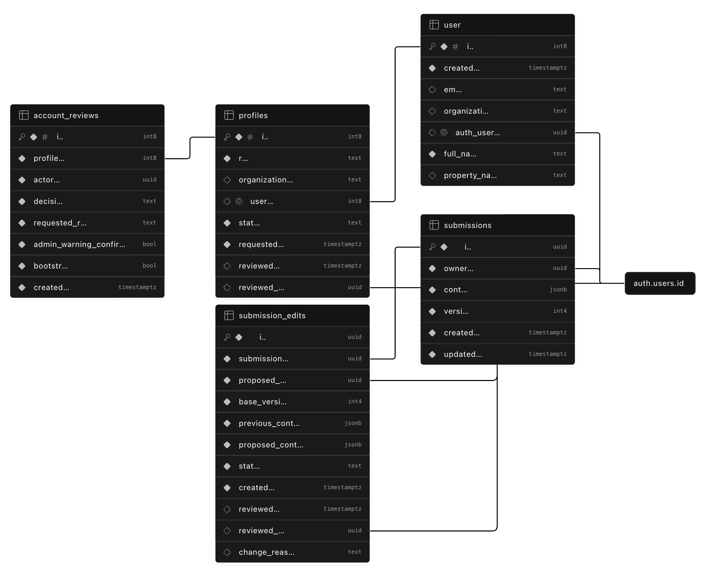
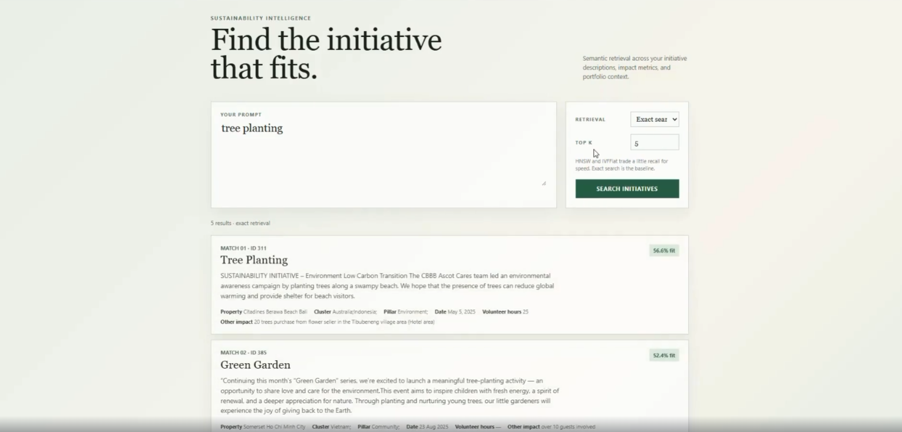
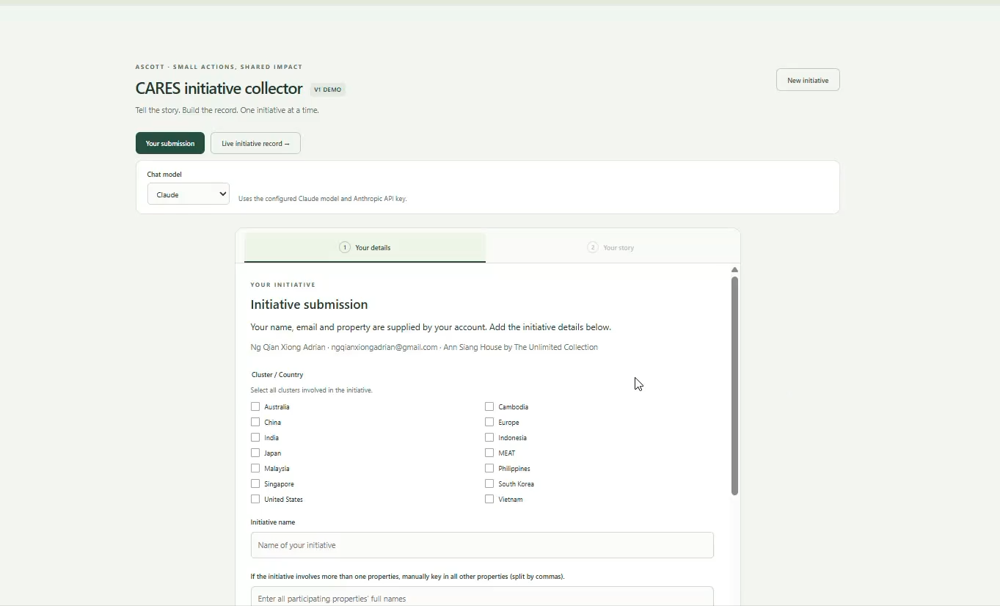
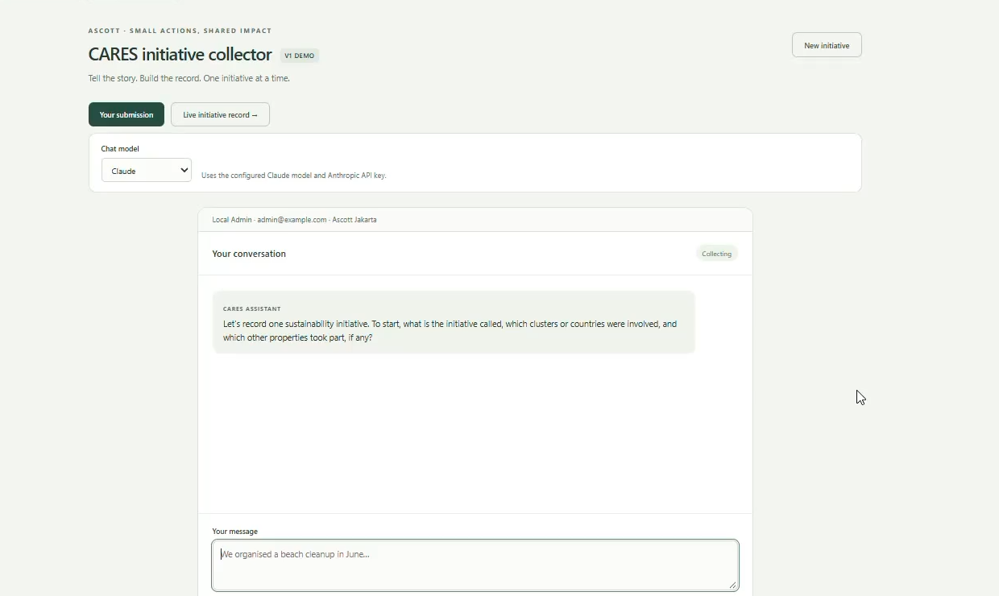

AI-assisted information elicitation for sustainability reporting
Elicit Green supports Ascott property staff in recording sustainability initiatives through guided conversation. It identifies unclear information during submission, converts responses into structured records and allows staff to review them before saving. The current phase focuses on collection quality; broader HQ reporting is planned for the next phase.
Ascott Limited, the lodging business of CapitaLand Investment, collects sustainability initiatives from properties across its international portfolio. Its CARES framework covers Community, Alliance, Respect, Environment and Supply Chain. Property-level information contributes to sustainability monitoring and reporting. Existing submissions are collected through Microsoft Forms and subsequently reviewed and consolidated by sustainability teams, alongside established reporting tools and consultants. This project focuses on the quality of initiative information entering that workflow, rather than replacing existing reporting infrastructure.
Objective
Improve the completeness, consistency and reporting relevance of sustainability initiative submissions while keeping staff effort manageable and fitting existing reporting workflows.
Scope
Phase 1 — current semester
Collect initiative information through guided conversation and relevant follow-up questions.
Extract a structured record and let property staff inspect and correct it.
Validate and save confirmed submissions with access controls.
Evaluate extraction reliability and preliminary usability.
Phase 2 — planned
Consolidate approved records across properties and standardise impact metrics.
Expand HQ dashboards and theme-driven initiative discovery.
Draft sustainability narratives for HQ review and approval.
Seek broader stakeholder input, including potential engagement with the Singapore Tourism Board.
The prototype demonstrates a software-based approach to data collection; global deployment, production integration and automated publication of sustainability reports are outside the validated scope of Phase 1.
2. Problem
Ascott’s property initiative submissions contain missing details, inconsistent metrics and insufficient context. Sustainability teams consequently seek repeated clarification between properties and HQ before consolidating information for reporting. Ascott identified ambiguity in 19.7% of the reviewed 2025 submissions, reinforcing the need to improve information quality at the point of collection.
Fishbone diagram

Figure 2.1. Fishbone analysis of the factors contributing to incomplete and inconsistent initiative records across the reporting workflow.
The fishbone analysis organises the problem into six interacting areas: form design, people, process, measurement, technology and organisation. In particular, free-text inputs and inconsistent units interact with varied staff interpretations and limited follow-up mechanisms. The five-whys analysis narrows these broader factors to a central process weakness: missing information is typically clarified after submission rather than during collection.
Five whys
Why is report preparation time-consuming? Incomplete submissions require manual review and repeated follow-up before consolidation.
Why are clarifications and revisions needed? Different properties provide inconsistent metrics, omitted details and insufficient narrative context.
Why are these gaps not resolved before submission? Fixed form fields and open-ended responses offer limited initiative-specific guidance.
Why does the collection process fail to identify them? Clarification largely occurs downstream, after information has left the originating property.
What is the underlying design gap? Collection lacks an adaptive mechanism to clarify missing facts, structure the response and let submitters verify it before saving.
Design constraints
Constraints were formalised to connect the root-cause analysis to concept screening. They describe the requirements a viable approach should satisfy; they are not evidence that a particular concept has already passed deployment testing.
Constraint
Engineering justification and design implication
C1. Source-level data collection
Intervene while property staff still know the initiative details, reducing the risk that gaps propagate into downstream consolidation.
C2. Structured, retrievable output
Convert submissions into machine-readable records with consistent fields, supporting later retrieval and reporting.
C3. Prototype feasibility
Demonstrate a working collection and validation workflow within the FYP's available time, resources and technical capabilities.
C4. Manageable staff effort
Collect richer information without excessive form-filling, repeated questions or unnecessary administrative work.
C5. Contextual reporting information
Capture descriptions, participants, beneficiaries and partner roles alongside impact measures, preserving the meaning behind numbers.
C6. Global scalability
Use a software-based approach suitable for geographically distributed properties without physical installations at each site; production-scale feasibility remains to be validated.
Design specifications
The eight proposed specifications translate the project objective into measurable outcomes. Targets below are design goals rather than demonstrated results; not all were evaluated in Phase 1.
ID / requirement
Proposed target
Measurement approach
D1. Submission completeness
≥85%
Share of applicable required fields populated with valid information.
D2. Information extraction accuracy
≥95%
Share of extracted fields matching manually verified ground truth.
D3. Contextual questioning efficiency
≥85%
Share of follow-up questions judged relevant and necessary.
D4. Information reliability
0% unsupported claims
Share of factual claims in extracted records lacking user support.
D5. CARES classification accuracy
≥90%
Share correctly mapped to applicable CARES pillars and targets.
D6. Submission efficiency and usability
<6 minutes
Median completion time; SUS evaluated separately.
D7. Narrative information sufficiency
≥90%
Share of submissions containing required reporting context.
D8. Metric standardisation
≥70%
Share of equivalent metrics normalised without merging distinct measures.
The presentation lists a 12-minute median for the existing form and Ascott’s stakeholder-reported 19.7% ambiguity observation. These baselines measure different outcomes and should not be interpreted as direct comparisons with D1 or D2. The current tests prioritise D1, D2, D4 and D6; the remaining targets require further stakeholder-defined evaluation.
3. Concept selection
Existing approaches and design gap
The team examined the existing Ascott Microsoft Forms process and reporting tools, alongside examples of ESG platforms presented in the interim review: Greenview, Workiva Carbon, Watershed and Sweep. These illustrate different combinations of data collection, carbon accounting, validation, analytics and reporting. The presentation did not establish that conversational collection is unique to Elicit Green. Instead, the project's proposed contribution is to apply adaptive, initiative-specific questioning and source-level quality assurance to Ascott CARES submissions. Product feature comparisons require independently verified citations before being treated as a formal literature review.
Human factors in data collection. Answering a form requires respondents to interpret questions, recall details, form judgments and map them into response fields (Tourangeau et al., 2000). Research on survey satisficing suggests that demanding questions can encourage lower-effort responses (Krosnick, 1991). These findings offer a plausible design rationale for contextual prompts and clarification, but they do not establish that Ascott staff are satisficing or that a chatbot necessarily produces better records. This remains a hypothesis for comparative testing.
Solution funnelling
Six concepts were generated across data entry, collection, processing and reporting. Filter 1 screened practical and organisational fit, especially C3 (prototype feasibility) and C6 (global scalability). Filter 2 prioritised source-level quality (C1), structured records (C2) and initiative-specific context (C5). Filter 3 considered whether the remaining approaches could accommodate varied initiatives while keeping staff effort manageable (C4) and remaining achievable within the FYP. S1, S3, S5 and S6 were compared in greater detail; S6 was selected as a phased integration of the complementary strengths of S5 and S3.

Figure 3.1. Solution funnel from six initial concepts to the integrated S6 approach.
Shortlisted concept
Contribution
Principal limitation / trade-off
S1. Enhanced structured forms
Improves consistency of initial field entry using clearer, more structured questions.
Fixed questions may not uncover gaps specific to a particular initiative.
S3. Automated data-processing pipeline
Automates extraction, cleaning and consolidation after data is received.
Cannot reliably recover facts that were never provided by the submitter.
S5. AI conversational data collection
Asks adaptive follow-up questions during submission, targeting missing context at its source.
Requires structured output, review controls and integration to make the collected information reliably reusable.
S6. Integrated AI sustainability platform
Combines conversational collection, structured processing and a pathway to reporting.
Broadest implementation scope; staged delivery is needed to remain feasible.
Across the end-to-end workflow, S1 primarily improves entry, S5 covers entry and clarification, and S3 covers downstream processing. S6 is an integrated architecture spanning collection, processing and reporting. The current prototype implements its collection and record-management foundation; the full reporting vision is planned, not yet validated.
Workflow coverage of shortlisted concepts

Figure 3.2. Concept coverage across the end-to-end reporting workflow. S6 represents the intended architecture; its full reporting functions are planned for a later phase.
Weighted decision matrix
Following the interim feedback, the team refined the weighted matrix to align concept evaluation with the engineering constraints and reporting objectives. The six criteria assess source-level data quality, staff usability, reporting readiness, adaptability, feasibility and scalability. The individual ratings and calculations are provided in Appendix G.
Evaluation criterion
Weight
Purpose
Source-level data quality
25%
Prevention of missing or inconsistent information.
Submission efficiency and usability
20%
Staff effort and avoidable repetition.
Reporting readiness
20%
Structure, comparability and downstream usefulness.
Contextual adaptability
15%
Coverage of diverse initiative types.
Implementation feasibility
10%
Time, cost and development complexity.
Global scalability and integration
10%
Software-based use across properties and compatibility with reporting workflows.
Each concept is rated on a 1–5 scale. The weighted total is the sum of criterion weight multiplied by rating. Feasibility constraints are considered during initial screening, while the matrix compares the relative strengths of the shortlisted concepts.
Concept
Revised weighted score (/5)
Rank
S1
3.35
3
S3
2.80
4
S5
4.00
2
S6
4.30
1
S6 achieves the highest revised weighted score because it combines source-level clarification with structured processing and a pathway to HQ reporting. S5 remains a strong alternative with lower implementation complexity. S6 was therefore adopted as a phased architecture: Phase 1 develops conversational collection, verification and record management, while broader reporting functions are reserved for Phase 2. Appendix G examines how the ranking responds to changes in the evaluation weights.
4. Solution
Overview
The objective of our approach is to give property staff
a way to clarify missing or unclear details while submitting an
initiative. They describe what happened in their words and chatbot
asks follow-up questions based on what they have shared. Information
is then organised into the reporting schema for the user to review before
submission. This aims to reduce fixed form entry and the need
for HQ to filter and chase for missing details, therefore addressing gaps
during data collection.
System architecture

Figure 4.1: System architecture
Frontend – Users chat, inspect the live record, and confirm submission. It signs in directly with Supabase Auth and sends the access token with every API request
Backend – FastAPI sends the conversation and current draft to the selected AI provider. It validates the structured response through Pydantic before updating the in-memory draft and returns the reply and record. Note: Schema validation checks structure and constraints; it does not prove that the extracted facts are correct.
Authorisation – The backend verifies the token with Supabase Auth and checks the account's approval status and role. Database access uses the signed-in user's token; row-level security (RLS) and guarded database functions called through RPC enforce access and write rules. The backend holds no service-role key.
Storage – Chat drafts remain in backend memory and are lost on restart. Confirming submission validates and saves the initiative to PostgreSQL. Accounts, saved submissions, proposed edits, and review history persist in the database. Later submission edits require administrator approval.
Implementation
1. Data collection and validation

Figure 4.2: Proposed chat turn
The sequence diagram shows how the application processes a single chat
message. The frontend sends the message and selected model details to the
backend, which checks account access and session ownership. It then locks
the draft session to prevent simultaneous updates. The backend sends the prompt,
conversation history, current draft and property context to the selected AI model.
This gives the model context to interpret new information while retaining previously collected facts.
The model then returns a structured record, reply and collection status. The
backend validates the record schema and follow-up question format before updating the
draft. If validation fails, it preserves the previous draft and chat history and returns
an error. This prevents an invalid response from overwriting previously collected information.
If validation succeeds, it updates both in memory and returns the updated record,
reply and status to the frontend.
Initiative Record Schema
The Excel submission dataset provided the main fields for the initiative record, including initiative name, description, date, cluster or country, participating properties, impact measures and CARES pillar (Ascott Limited, 2025a). Analysis of narratives in the 2025 sustainability report informed the finer details, particularly the distinction between participants, partners and beneficiaries (Ascott Limited, 2025b). Participants and beneficiaries are recorded by group and count, while partners are recorded by name and role. Impact measures are stored as a list containing the metric, value and unit, replacing the separate columns for volunteer hours, blood donors, waste collected and trees planted. This structure accommodates different initiatives while keeping their information consistent for later processing and reporting.
Conversational Collection and Prompt Design
The record schema defines the information the chatbot aims to collect. The system prompt guides the model to extract relevant facts from each message and ask follow-up questions about missing or unclear details. It instructs the chatbot to avoid repeating answered questions, accept corrections and leave information unknown when the user cannot provide it. Recording rules also distinguish planned benefits from achieved results and prevent unsupported quantities or dates from being added. These instructions guide the conversation towards a structured initiative record, although their effectiveness requires evaluation as they do not guarantee compliance (see Controlled scenarios: DeepEval).
The system prompt defines the following rules for collecting and
structuring initiative information.
Rule
Reason
Collect one initiative at a time.
Prevent details from different initiatives being mixed together.
Record only user-supplied facts. Preserve unknown values and
the precision of dates and quantities.
Avoid invented details and false certainty.
Preserve existing facts unless the user corrects or withdraws them.
Prevent information loss while allowing corrections across
conversation turns.
Record participants, partners and beneficiaries separately.
Distinguish who participated, who helped deliver the initiative
and who benefited.
Preserve metric values and units, keep distinct measures separate,
and avoid duplication or inferred calculations.
Maintain the meaning of reported measurements and prevent
misleading totals.
Distinguish goals and planned benefits from achieved results.
Prevent intended outcomes being presented as measured impact.
After the opening question, ask one relevant follow-up question
at a time. Do not repeatedly request answered or skipped information.
Clarify gaps while limiting unnecessary questioning and user effort.
Use approved cluster and property names, and clarify ambiguous matches.
Keep records consistent without guessing which location the user means.
Record an explicitly selected CARES pillar directly, but obtain
confirmation for an assistant suggestion.
Keep the classification under user control.
Return the complete updated record, chatbot reply and collection status.
Keep the live record and conversation aligned.
Stop collecting when the user confirms completion, preserving
known facts and accepted unknowns.
Respect the user's decision to finish without inventing information
to fill remaining gaps.
Validation and Live Record Review
Pydantic checks the record structure, data types and constraints, but these checks do not
establish factual correctness. Users inspect the live record and return to chat to correct
missing or misinterpreted information. During collection, the draft remains in backend
memory, keeping work in progress separate from saved submissions. These temporary drafts
are lost if the backend restarts. Submission confirmation is separate from finishing the
conversation and triggers final validation and database storage.
2. Centralised record management and governance

Figure 4.3: Database schemas
The platform uses a central PostgreSQL database hosted on Supabase to store accounts, initiative submissions and proposed changes. As shown in the database schema diagram, related tables separate account information, saved records and review decisions. This allows property staff and HQ to work from a shared set of records while retaining different access permissions.
Submission Storage and Retrieval
When a user confirms submission, the backend validates the initiative record and saves it in the submissions table. Each submission stores its owner, structured content, version number and creation and update timestamps. The initiative fields are held within a JSONB content column, preserving the record produced during collection. This stores the initiative as one structured document while accommodating lists of participants, partners, beneficiaries and impact measures that vary between initiatives. Partners can retrieve their own submissions, while consultants and administrators can view submissions across properties.
Account Access and Permissions
Supabase Auth manages sign-in and verifies user identity. The user and profiles tables hold account details, requested roles and approval status. The backend fills the submitter’s name, email and reporting property from the authenticated account, avoiding repeated entry and linking the submission to the account’s identity. Users must verify their email and receive administrator approval before accessing protected functions. Partners can submit initiatives and propose changes to their own records, consultants have read-only access to saved submissions, and administrators manage account requests and submission changes.
The backend checks account status and permissions on each protected request. Database access uses the signed-in user’s token, allowing row-level security policies and database functions called through RPC to enforce ownership and role restrictions. These database checks also apply when requests bypass the application interface.
Proposed Changes and Review History
Changes to saved submissions are stored separately in submission_edits. Each proposal includes the previous and proposed content, a reason for the change and the submission version on which it was based. The saved submission remains unchanged while the proposal awaits review. Approval applies the proposed content; rejection preserves the existing record.
The platform records the reviewer, decision status and review time, providing a history of submission changes. Version checks prevent proposals based on outdated records from overwriting newer content. Account approval decisions are recorded separately in account_reviews, supporting traceability for both account access and record changes.
Prototype iterations

Iteration 1: Searching existing submissions
The first prototype focused on finding initiatives within the 2025
Excel submission dataset. It supported access to existing information
but did not change how new initiatives were collected. Missing or
unclear details therefore remained dependent on the original submissions.
This limitation prompted a shift towards improving information
collection at its source.

Iteration 2: Details form and guided conversation
The second prototype introduced a submission workflow in which partners
signed in, completed a Details form and described their initiative
through guided chat. Users could review the extracted record before
confirming submission. Follow-up questions aimed to clarify missing
information during collection. However, the separate form divided
the process into two stages. Other participating properties were
entered as free text, and choosing not to provide a story allowed
users to bypass conversational collection.

Iteration 3: Chat-only collection
The final prototype removed the Details form and brought initiative
name, cluster or country, and other participating properties into
the conversation. Cluster and property values were constrained to
approved lists, with unclear names requiring clarification.
Every initiative passed through the guided conversation, followed
by record review and submission confirmation. This consolidated
collection into one workflow and reduced reliance on free-text
property names.
The implementation combines guided questioning, structured extraction
and user review to address gaps during collection. These mechanisms
require evaluation because valid records may still contain missing
or misinterpreted information. The following section assesses extraction
accuracy and information reliability through controlled scenarios,
alongside perceived usability through user testing.
5. Testing
Overview
Testing assessed whether the platform could capture complete and accurate
initiative information without introducing unsupported facts, while
keeping the submission process usable for property staff. Controlled
scenarios assessed extraction behaviour against predefined expected
records, while user testing assessed the submission experience.
The methods were linked to the following design specifications.
Supporting test materials and results are provided in
Appendices C
to E.
Design specification
Testing purpose
Method
D1: Submission completeness
Assess whether completed records contain all applicable
required information.
Check completed records against a field checklist.
D2: Information extraction accuracy
Assess whether the system correctly extracts and structures
information supplied by the user.
Controlled scenarios evaluated against expected records
using DeepEval.
D4: Information reliability
Assess whether extracted records contain unsupported
or fabricated facts.
Controlled scenarios evaluated using exact checks
and AI-based fidelity criteria.
D6: Submission efficiency and usability
Assess how efficiently users complete a submission
and how usable they find the platform.
Timed submission tasks and the System Usability Scale (SUS).
Usability
User testing assessed the submission experience, supporting D6:
submission efficiency and usability. Participants completed a
sustainability initiative submission using Elicit Green, then
answered the standardised 10-item System Usability Scale (SUS)
questionnaire (Brooke, 1996) immediately afterwards.
SUS assessed perceived usability. Submission time and facilitator-recorded field completeness were recorded separately; neither measure directly establishes downstream reporting readiness or a reduction in HQ clarification. The raw anonymised evidence and scoring are in Appendix E.
Testing procedure
Participants described an initiative through the chatbot,
reviewed the live record and confirmed submission.
Participants completed the SUS questionnaire immediately
after the task.
Questionnaire responses were converted into individual SUS
scores, then averaged within each participant group.
Results
Participant group
Number of participants
Mean SUS score (0–100)
Ascott
2
75.0
Ridge
2
80.0
The four individual SUS scores were 70, 75, 80 and 85 (overall mean 77.5). The Ascott group mean is 75.0 and Ridge group mean is 80.0, calculated by participant group rather than by preference grouping. Two respondents slightly preferred static forms and two preferred the chatbot. Appendix E provides the anonymised response matrix and scoring calculation. SUS scores describe perceived usability, rather than extraction
accuracy or submission completeness. Participant counts and
testing conditions should be considered when interpreting
differences between groups. The task instructions, questionnaire
and anonymised responses are provided in
Appendix E.
Controlled testing
DeepEval is an open-source framework for evaluating LLM applications
(Confident AI, n.d.-a, 2026).
It supports evaluation datasets, single-turn and multi-turn testing,
built-in and custom metrics, and automated tests through pytest.
Evaluation can target an entire application or individual components.
For this project, we use predefined test cases to assess the chatbot's
information extraction component. A custom code-based metric checks
structured facts, while two G-Eval metrics (Liu et al., 2023) use an LLM judge to assess
the meaning of descriptions and labels. Scores, explanations and
passing thresholds help identify errors and compare performance
across prompt revisions.
Evaluation workflow

Figure 5.1: DeepEval workflow
Our goldens contain predefined user inputs and expected initiative
records. For each case, we run the application's extraction code
to generate an actual record. DeepEval evaluates this record using
the metrics applicable to the expected fields, producing scores
and explanations. A case passes when every selected metric meets
its threshold. The test cases and their results are listed in
Appendix C, and the
system prompt being tested is reproduced in
Appendix B.
Failed cases are reviewed to distinguish extraction errors from
problems in the expected records or evaluation criteria.
Where justified, we revise the prompt, implementation or test
labels and rerun the evaluation. Thresholds remain fixed, and
unresolved failures are reported separately
(Appendix C). The
revisions made and the counts before and after are summarised in
Appendix D.
Evaluation metrics
Each test case uses the metrics applicable to its expected record.
A case passes only when every selected metric meets its threshold.
Metric
What it evaluates
How it works
Passing threshold
Field Exact Match
Structured facts, including dates, CARES pillar, counts,
partner names and metric values.
Custom code compares expected fields with the extracted record.
Text is normalised for casing and surrounding spaces, while
list order is ignored. The score is the proportion of evaluated
fields that match.
1.0
Label Fidelity
Participant and beneficiary groups, partner roles,
metric names and units.
A G-Eval AI judge (gpt-4.1-mini) checks whether labels preserve the expected
meaning and remain paired with the correct counts, values,
units or partner names. Equivalent wording is accepted;
missing, changed or unsupported information is penalised.
0.7
Description Fidelity
The factual meaning of the initiative description.
A G-Eval AI judge (gpt-4.1-mini) compares the actual and expected descriptions,
using the input to check factual support. Paraphrasing is
accepted, but expected facts must be preserved and unsupported
details must not be added.
0.7
These thresholds are configured for this project. A score of 0.7
is a passing criterion, not a claim of 70% extraction accuracy.
The judges' evaluation steps, the Field Exact Match rules and the
recorded run configuration are given in
Appendix D; the
evaluation code is linked in
Appendix F.
6. Areas for improvement and future development
Current limitations
Interim usability testing placed considerable emphasis on submission time, although the principal project challenge is the quality and reporting relevance of collected information. Faster submission does not necessarily reduce missing details or downstream clarification. The four-participant study provides preliminary usability evidence but does not directly measure HQ reporting readiness. Final prototype testing will therefore prioritise record completeness, contextual questioning and the number of clarifications required after submission.
The evaluation provides preliminary evidence of the platform's
performance. Usability testing involved four participants, while
controlled scenarios covered a limited range of initiative inputs.
These findings cannot establish performance across the wider property
workforce or all initiative types. The extraction metrics also assess
records rather than independently evaluating the relevance and
efficiency of the chatbot's follow-up questions.
DeepEval's language-model evaluators compare extracted descriptions and labels with expected records using predefined scoring criteria. Because these evaluators can interpret wording differently across runs, their scores are reviewed alongside deterministic field checks. Reporting conventions, metric definitions and evaluation targets will also be refined with stakeholders.
Immediate improvements
Final-phase evaluation redesign. Matched initiative scenarios will be submitted through both the current static form and the conversational prototype, ideally with comparable participants and counterbalanced order. Independent reviewers will assess completeness of applicable fields, ambiguous or unsupported claims, contextual sufficiency and the number of HQ clarification requests needed before a record is reporting-ready. Conversation logs will be assessed for relevant follow-ups, repetition and correct handling of unknown values. Submission time and SUS will be retained as secondary measures to detect excess staff burden, not as the primary success criteria. The evaluation protocol, scoring rubric and participant recruitment will be agreed before testing.
Further testing should use broader scenarios informed by property
staff and HQ, including incomplete descriptions, ambiguous
measurements and corrections across multiple turns. Conversation-level
assessment should examine whether the chatbot asks necessary questions,
avoids repetition and preserves information as the discussion develops.
A larger usability sample would provide a stronger basis for assessing
the submission experience.
Expected records and scoring criteria should be reviewed before
subsequent evaluations. Each run should record the prompt, model,
dataset and evaluation settings so that changes can be traced.
Stakeholder review should also refine the design specifications and
establish agreed metric names, units and reporting requirements.
Future expansion Planned
Once collection quality and reporting conventions are better
established, development can extend towards the HQ workflow.
Planned capabilities include broader aggregation across properties,
expanded sustainability indicators, and dashboards for monitoring
performance against targets. These would build on the preliminary
reporting dashboard already implemented.
A later stage could use the collected records to generate draft
sustainability narratives for HQ to review, refine and approve.
These extensions remain as future work and have not been validated
through the current extraction tests.
Conclusion
Elicit Green brings guided conversation, structured extraction,
user review and submission management into one platform.
It gives property staff an opportunity to clarify information
before it enters the shared submission records. Broader evaluation
and stakeholder input are needed to determine whether this approach
reduces reporting effort and improves data quality in practice.
Strengthening this foundation will support future development
towards HQ analysis and reporting.
Team
Ng Qian Xiong Adrian — Prototype development (primarily iterations 1 and 3); DeepEval controlled testing.
Shruti Moovendran — Prototype development (primarily iteration 2); stakeholder coordination, SUS testing and analysis.
Joint contributions — Problem analysis, concept selection, design decisions, prototype refinement and report preparation.